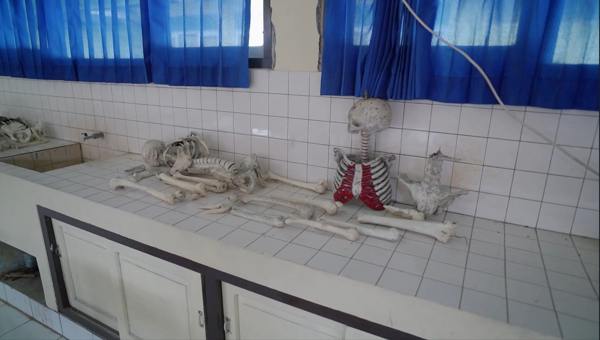
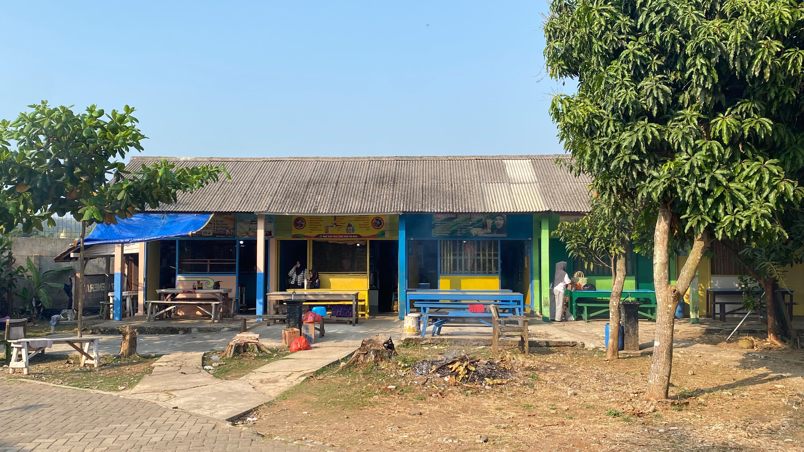
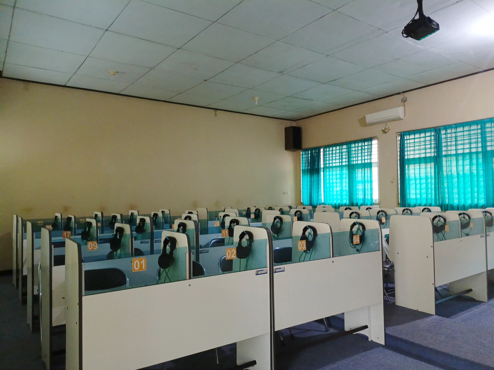

Profil resmi SMA NEGERI 1 SUBAH dan gambaran umum layanan pendidikan sekolah.
SMA Negeri 1 Subah hadir sebagai lembaga pendidikan menengah yang adaptif terhadap perkembangan zaman. Dalam rangka merespons tantangan global, sekolah ini memfokuskan perkembangannya pada dua pilar utama, yaitu sebagai Sekolah Digital dan pusat Penumbuhan Jiwa Kewirausahaan (Entrepreneurship). Berbekal komitmen yang kuat, SMA Negeri 1 Subah terus berupaya menciptakan ekosistem belajar yang tidak hanya unggul dalam pencapaian akademik, tetapi juga kokoh dalam pembentukan karakter dan pembekalan keterampilan hidup (life skills) bagi seluruh peserta didiknya.
"Terwujudnya ekosistem belajar yang unggul dalam pencapaian akademik, kokoh dalam pembentukan karakter, serta menghasilkan lulusan yang tangguh, berdaya saing tinggi, adaptif terhadap teknologi, dan memiliki keterampilan wirausaha."
Bagan alur kepemimpinan dan manajemen tata kelola di SMA Negeri 1 Subah dirancang secara profesional guna memastikan seluruh program sekolah—mulai dari pilar Sekolah Digital, pengembangan kewirausahaan, hingga program pembinaan kesiswaan—dapat berjalan secara sinergis, transparan, dan berkelanjutan.
Didukung oleh tenaga pendidik profesional yang ahli di bidangnya masing-masing serta staf kependidikan yang berdedikasi tinggi.
Guru Mata Pelajaran & Produktif
Tenaga Kependidikan / Staf



Unggul dan Terakreditasi Resmi
Sekolah Terbaik #1 di Kabupaten Batang.
Penghargaan Sekolah Adiwiyata.